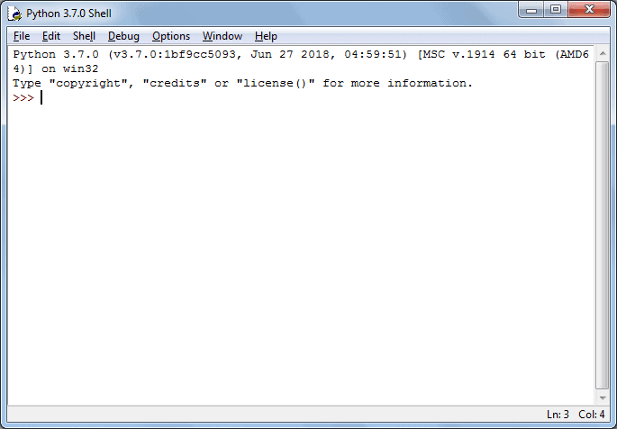
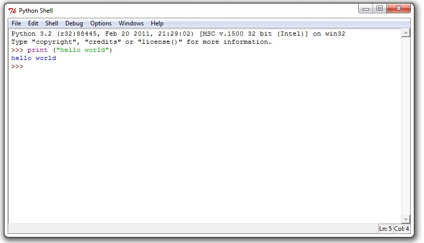

PYTHON REVIEW
WHAT CAN PYTHON DO?
- It can be used on a server to create web applications.
- It can be used to create customized application software.
- It can connect to database systems. It can also read and modify files.
- It can be used to handle huge amount of data and perform complex mathematics.
- It can be used for rapid prototyping or for production-ready software development.

STARTING PYTHON
- Step 1: In Windows, open the Start menu, select All Programs Python 3.10 and then select IDLE (Python 3.10 64 bit).
print() FUNCTION
- The print() function prints or displays the specified message on the screen.
- At the >>>prompt, type the following:
print("I am learning Python")
Press enter to tell Python that you're done with your command. Immediately, the command line window will display 'I am learning Python' on the following line.

- Now try typing:
Print("Hello, World!")
Here, you'll get a syntax error message because you typed print with a capital letter. Because Python is case sensitive.
Hence Print() and print() are not same.
-
To write two separate executable statements in a single line, you should use a semicolon(;)
print("Hello, World!");print("This is second line")
Next Page